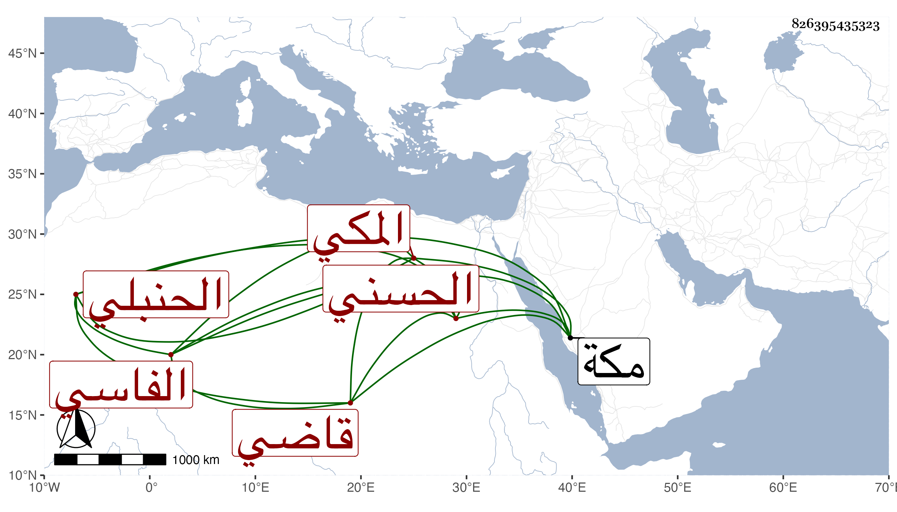

0902Sakhawi.DawLamic.ITO20230111-ara1.EIS1600.826395435323
Biography ID: 826395435323
409
شريفة ابنة السراج عبد اللطيف بن أبي الفتح محمد بن أحمد الحسني الفاسي المكي الحنبلي أخت المحيوي عبد القادر قاضي الحرمين وسعادة الماضيين . ولدت في النصف الأول سنة عشر وثمانمائة وسمعت من الزين أبي بكر المراغي المسلسل وغيره وأجاز لها عائشة ابنة ابن عبد الهادي وابن الكويك وخلق وتزوجها السراج عمر بن عبد الله بن القاضي تقي الدين محمد بن أحمد الحرازي في سنة أربع وثلاثين وطلقت عليه لغيبته عنها فتزوجها السراج عمر بن أبي راجح الشيبي ثم طلقها وكانت شريفة نسبا واسما . ماتت في صفر سنة اثنتين وثمانين بمكة . أرخها ابن فهد .
